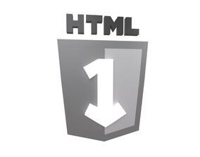
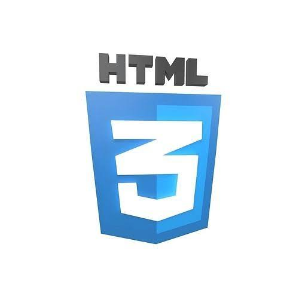

HTML
HOW IT BEGAN: The history of HTML began in the late 1980s and early 1990s with the work of Tim Berners Lee at CERN (the European Organization for Nuclear Research) in Geneva, Switzerland. Berners Lee is a British physicist and computer scientist was looking for a way to allow researchers to easily share documents and data across a network.
THE PLAN AND WHO MADE IT: In 1989 Berners Lee proposed a project based on combining hypertext technology with the rapidly expanding internet. His plan was to create an information network where documents could be interconnected through links. So he developed the first web browser and the first web server also with the markup language that would allow documents to be structured in HTML.
WHAT IT IS: HTML was designed to be a simple language using markup tags that web browsers could interpret to display text, images and other content in a structured way. Early versions of HTML were quite basic and that allowed the creation of headings, paragraphs, lists, and links.

Evolution of HTML
HTML 1.0 It was a really simple beginning of HTML and it was a loose collection of tags that Berners-Lee created for his CERN project in 1991. This HTML was remarkably basic and it only featured 18 elements focused primarily on document structure. This had no JavaScript no images and no CSS it was just pure textual content with basic structural elements.
⚪ Headings ⚪ Paragraphs ⚪ Line breaks ⚪ Simple lists ⚪ Basic hyperlinks

HTML 2.0
By 1995 the web had gained enough traction that standardization became necessary. HTML 2.0 became the first ever official specification and it was published by the Internet Engineering Task Force. This version formalized many of the elements already in use and added new features to it.
⚪Form elements ⚪Images ⚪Document metadata in the (head) section
⚪Basic tables for data presentation
HTML 3.2
HTML 3.2 The mid 1990s saw the infamous "browser wars" between Netscape Navigator and Internet Explorer. Both browsers implemented proprietary tags to differentiate themselves which resulting in fragmentation of web standards. HTML 3.0 was actually proposed but it was never fully implemented so instead HTML 3.2 emerged in the 1997s as a compromise standard from the newly formed world wide web. It incorporated many of the extensions that had become widely used:
⚪More table options for layout ⚪Font styling elements ⚪Basic scripting support ⚪Applet integration

HTML 4.0
HTML 4.0, released in 1997 (with 4.01 following in 1999) and marked a philosophical shift in web development. The key innovation was the formal separation of structure (HTML), presentation (CSS), and behavior (JavaScript).
This version introduced:
⚪Strict, Transitional, and Frameset variants ⚪Enhanced form capabilities ⚪Improved accessibility with elements like(<"label">) ⚪International language support ⚪Deprecated presentational elements like
XHTML
Around 2000 the W3C took a detour toward XHTML and attempting to reformulate HTML as an XML application. XHTML 1.0 essentially recast HTML 4.01 with stricter syntax rules:
⚪All tags and attributes had to be lowercase ⚪All elements needed to be properly closed, including self-closing tags like ⚪Attribute values required quotes ⚪Documents needed proper DOCTYPE declarations
HTML 5
While the W3C pursued XHTML a group called WHATWG (Web Hypertext Application Technology Working Group) formed by representatives from Apple, Mozilla, and Opera, began to work on HTML5. By 2008 the W3C acknowledged HTML5’s momentum and reoriented its efforts.